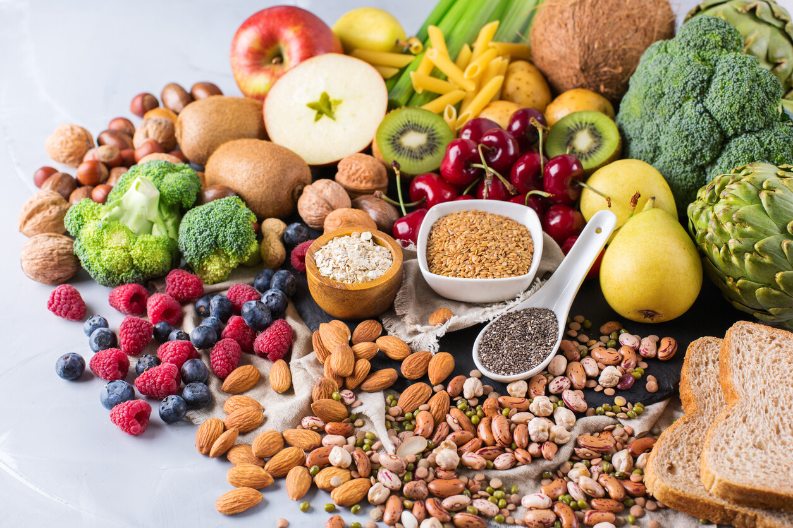

Los principales factores que influyen en la durabilidad, el tipo y forma de las vitaminas:
Proyecto de Biología - 9° Grado
Los principales factores que influyen en la durabilidad de las
vitaminas
Temperatura:
La temperatura puede acelerar el proceso de degradación , oxidar y reducir la eficacia de las vitaminas, especialmente en las vitaminas hidrosolubles como la vitamina C.
Luz:
La luz deteriora la mayoría de vitaminas tales como A, C, E,K y la vitamina B2. Todo ello mediante un proceso llamado fotodegradación, prvocando la decoloración y pérdida de calidad.
Oxígeno:
El oxígeno disminuye la durabilidad de las vitaminas mediante un proceso llamado oxdación, volviendolas inactivas o menos efectivas. Especialmente afecta a las vitaminas que son liposolubles y a la vitamina C.
Ph:
Algunas vitaminas, como la tiamina (vitamina B1), son sensibles a los
cambios en el nivel de pH.

Factores relacionados con el tipo y forma de la vitamina
Vitaminas Liposolubles:
Las vitaminas A y E son más sensibles a la
luz y al oxígeno, mientras que la vitamina D se puede almacenar en el
cuerpo en el tejido adiposo.
Vitaminas Hidrosolubles :
La vitamina C es sensible al oxígeno, luz,
calor y pH; las vitaminas B también pueden degradarse bajo ciertas circustancias.